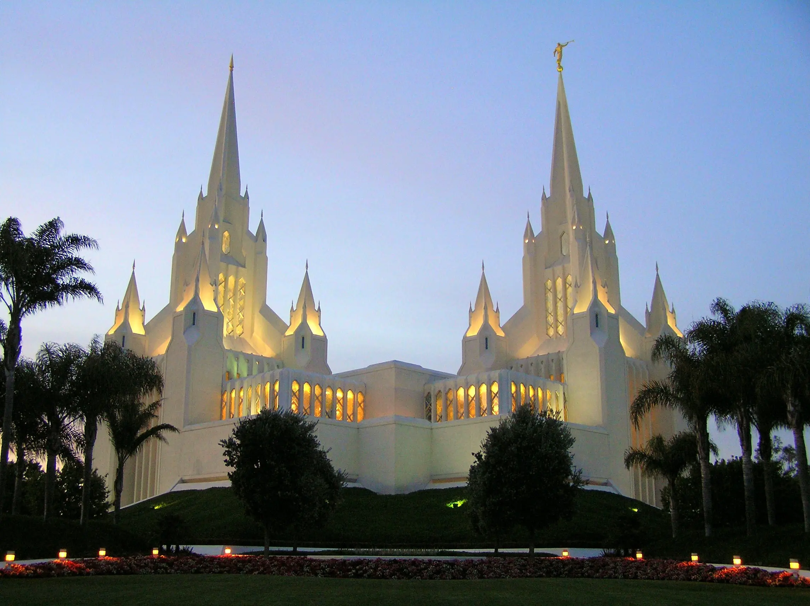
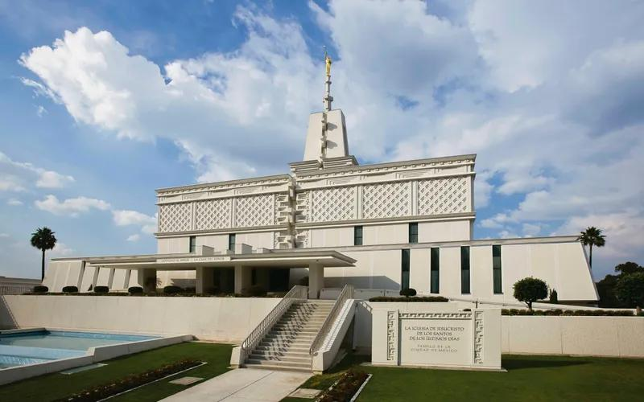
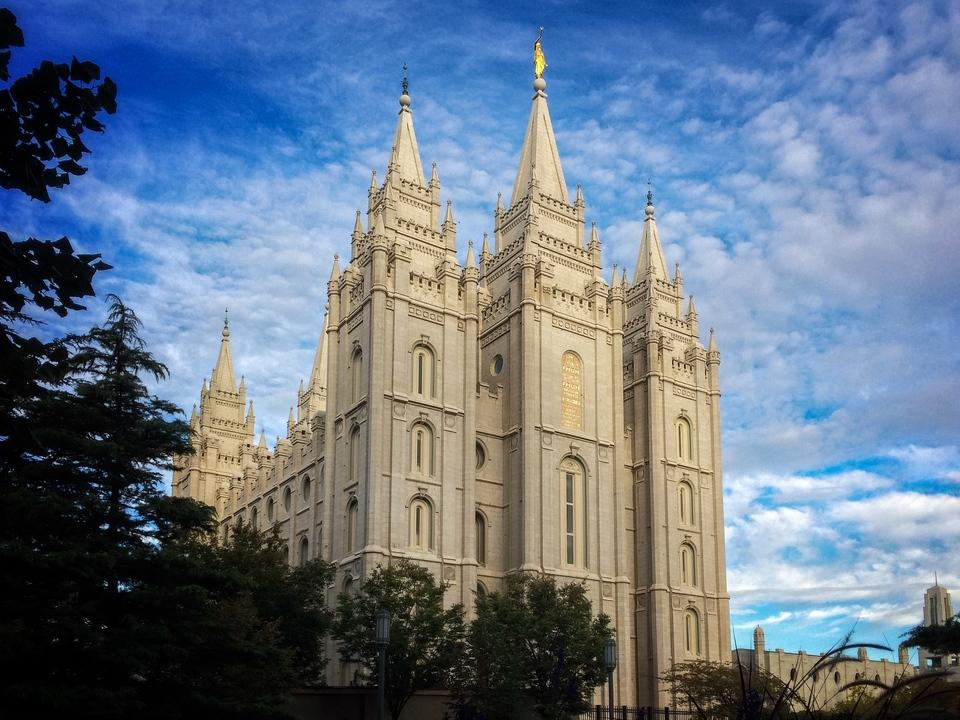

Temple Album
Home
Old
New
Large
Small
Home

San Diego California

Ciudad de México, México

Salt Lake City, Utah
Monterrey, Mexico
Albuquerque, New Mexico
Colorado Springs, Colorado
Guadalajara, Mexico
Roma, Italy
Oaxaca, Mexico